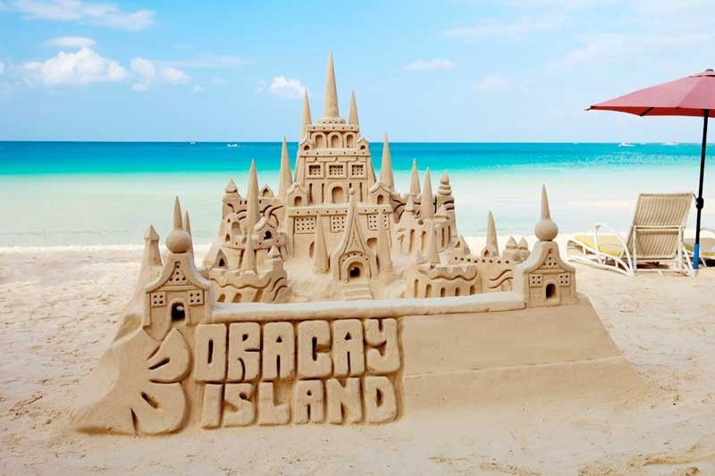
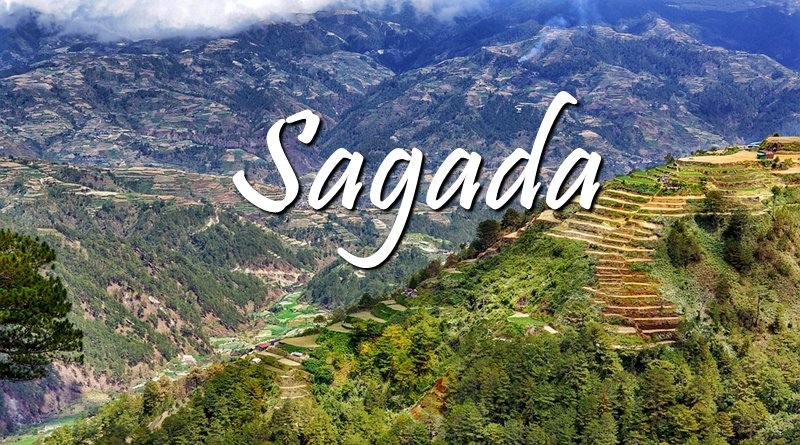
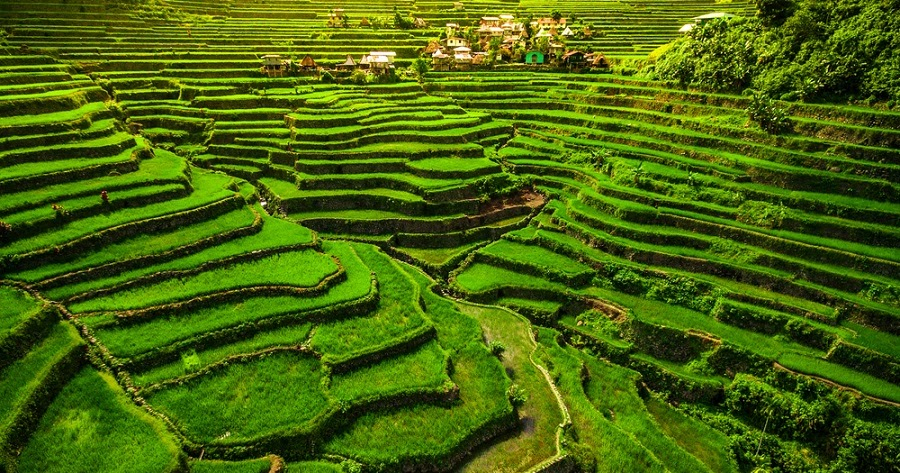
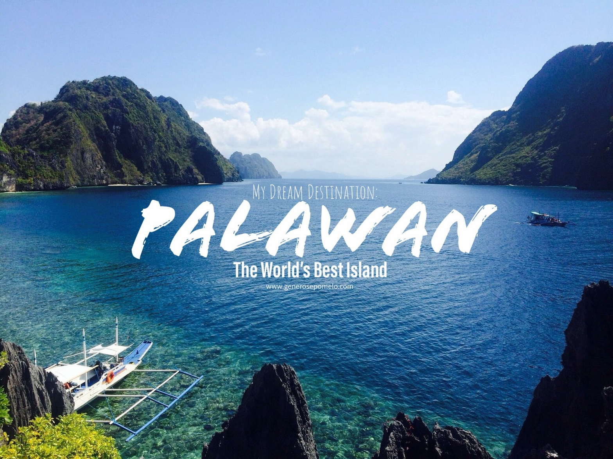

| Home | Boracay | Siargao | Puerto Princesa | Sagada | Banaue | Palawan |
|---|
|  |
BoracayBoracay is a resort island in the Western Visayas region of the Philippines. It lies 0.8 kilometers (0.50 mi) off the northwest coast of Panay. Having a total area of 10.32 square kilometers (3.98 sq mi), it is under the jurisdiction of three barangays in Malay, Aklan, which is 2015, had a population of 32,267. The Boracay Inter-agency Task Force administered the island during its six-month-long closure in 2018.Boracay island from space Apart from its white-sand beaches, Boracay is also famous for being one of the world's top destinations for relaxation. As of 2013, it was emerging among the top destinations for tranquility and nightlife. <---- Click the image for more information |
Siargao, Sugba LagoonSugba Lagoon is one of the top places to visit in Siargao that offers an unforgettable experience at one of the bluest lagoons you’ll ever see!<---- Click the image for more information |
|

|
Puerto PrincesaPuerto Princesa, officially the City of Puerto Princesa, is a 1st class highly urbanized city in the Mimaropa region of the Philippines.According to the 2020 census, it has a population of 307,079 people. It is located in the western Philippine province of Palawan and is the westernmost city in the Philippines. Though the province's seat of government and capital, the city itself is one of 38 independent cities within the Philippines not controlled by the province. Therefore, it is geographically located and is a separate area located within Palawan. <---- Click the image for more information |
|  |
SagadaSagada, officially the Municipality of Sagada, is a 5th class municipality in Mountain Province, Philippines. According to the 2020 census, it has a population of 11,510 people.It is adjacent to Bontoc, the provincial capital. Sagada is famous for its hanging coffins. This is a traditional way of burying people that is still utilized. Not everyone is qualified to be buried this way; among other things, one had to have been married and had grandchildren. <---- Click the image for more information |
|  |
BanaueBanaue (or spelled as Banawe), officially the Municipality of Banaue, is a 4th class municipality in Ifugao, Philippines. According to the 2020 census, it has a population of 20,652 people. It is widely known as the UNESCO World Heritage Site, the Batad Rice Terraces, and Bangaan Rice Terraces.<---- Click the image for more information |
|  |
PalawanPalawan (pronounced /pəˈlɑːwən/), officially the Province of Palawan (Cuyonon: Probinsya i'ang Palawan; Tagalog: Lalawigan ng Palawan; Hiligaynon: Kapuoran sang Palawan), is an archipelagic province of the Philippines that is located in the region of Mimaropa. It is the largest province in the country in terms of total area of 14,649.73 km2 (5,656.29 sq mi). The capital city is Puerto Princesa. Palawan is known as the Philippines’ Last Frontier and as the Philippines’ Best Island.<---- Click the image for more information |